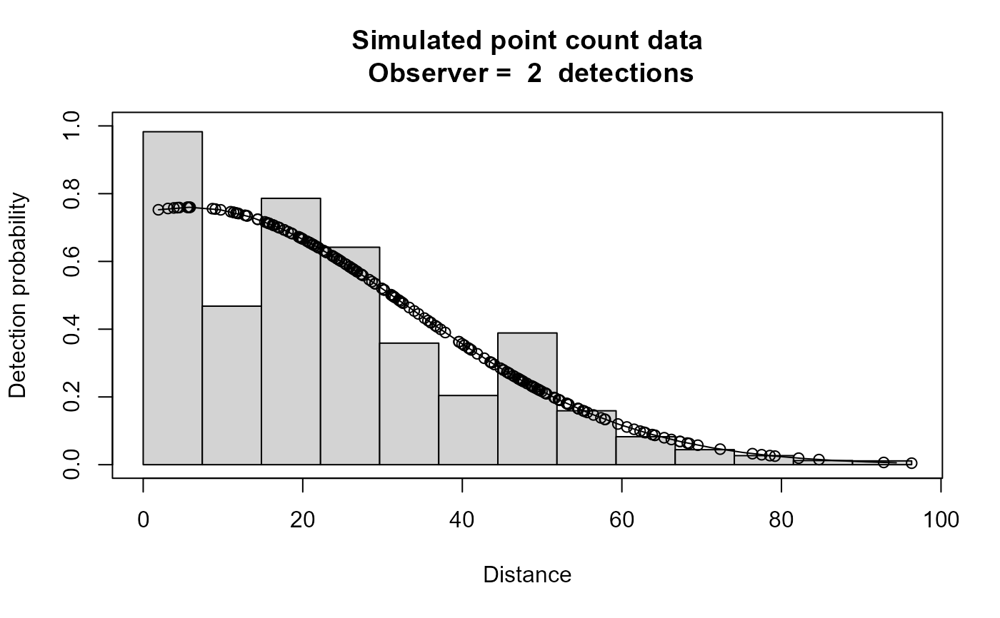

Simulated dual observer point count data with detection p(0)=0.8; hn sigma=30; w=100 for both observers with dependency y>0, gamma=0.1
Format
The format is 420 obs of 6 variables: distance: numeric distance from center observer: Factor w/ 2 levels "1","2": 1 2 1 2 1 2 1 2 1 2 ... detected: numeric 0/1 person: Factor with 2 levels A,B pair: Factor with 2 levels "AB" BA" $ object : sequential object number
Examples
# \donttest{
data(ptdata.dual)
xx <- ddf(mrmodel=~glm(formula=~distance),
dsmodel = ~cds(key="hn", formula = ~1),
data = ptdata.dual, method = "io", meta.data = list(point=TRUE))
#> Warning: no truncation distance specified; using largest observed distance
summary(xx)
#>
#> Summary for io.fi object
#> Number of observations : 210
#> Number seen by primary : 199
#> Number seen by secondary : 193
#> Number seen by both : 182
#> AIC : 192.4567
#>
#>
#> Conditional detection function parameters:
#> estimate se
#> (Intercept) 1.06437933 0.41946692
#> distance 0.04904523 0.01408653
#>
#> Estimate SE CV
#> Average primary p(0) 0.7435266 0.07999017 0.10758213
#> Average secondary p(0) 0.7435266 0.07999017 0.10758213
#> Average combined p(0) 0.9342214 0.04103071 0.04391969
#>
#>
#> Summary for ds object
#> Number of observations : 210
#> Distance range : 0 - 96.32036
#> AIC : 1817.79
#> Optimisation : mrds (nlminb)
#>
#> Detection function:
#> Half-normal key function
#>
#> Detection function parameters
#> Scale coefficient(s):
#> estimate se
#> (Intercept) 3.38454 0.03661838
#>
#> Estimate SE CV
#> Average p 0.1867483 0.01332166 0.07133485
#> EDR 41.6242555 1.48462997 0.03566742
#>
#>
#> Summary for io object
#> Total AIC value : 2010.247
#>
#> Estimate SE CV
#> Average p 0.1744643 0.01461507 0.08377111
#> N in covered region 1203.6847617 125.94892721 0.10463614
plot(xx,main="Simulated point count data")

# }